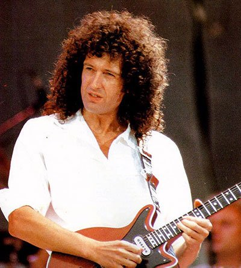

"Music is the divine way to tell beautiful, poetic things to the heart."
- Freddie Mercury
members in the band

Freddie Mercury
Vocals and Piano
Freddie Mercury, whose real name was Farrokh Bulsara, was the lead vocalist and primary songwriter of Queen. Known for his powerful and versatile voice, he was also an energetic and charismatic performer on stage. He wrote many of Queen's hit songs and was a key creative force behind the band's success.

Brian May
Guitar and Vocals
Brian May is the lead guitarist of Queen and also contributed vocals to the band's harmonies. He is known for his distinctive guitar playing style and his use of the "Red Special" guitar that he and his father built. Apart from his musical contributions, May is also an astrophysicist and has been involved in various charitable and environmental causes.

Roger Taylor
Drums and Vocals
Roger Taylor was the drummer and a vocalist for Queen. He also contributed to songwriting and provided lead vocals on several tracks. Taylor's powerful drumming and vocal abilities added to the band's unique sound. He wrote some of Queen's popular songs and continued his music career after the band's dissolution.

John Deacon
Bass
John Deacon was the bass guitarist for Queen. While he did not contribute vocals as frequently as the other members, he played a crucial role in shaping the band's rhythm section. Deacon was also a skilled songwriter and composed some of Queen's biggest hits, including "Another One Bites the Dust."